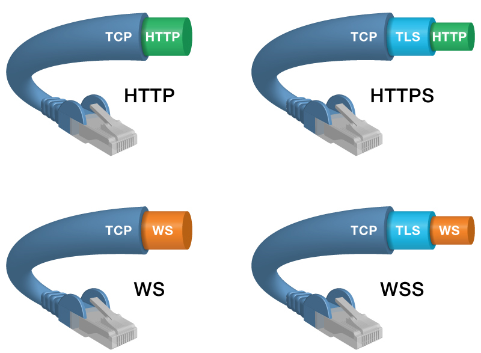

About HTTPS and WSS
Kaazing Gateway supports communication over HTTPS and WSS. The Gateway supports the following communication between the Gateway and the client: HTTP, HTTPS, WS, WSS. The HTTPS and WSS protocols are very similar, with both running on top of TLS/SSL over TCP connections.
The cables at the top of the following figure show how HTTPS is not a separate protocol, but it is the combination of HTTP running on a TLS/SSL connection. Commonly, HTTPS uses a different port than HTTP (HTTPS’s default port is 443 and HTTP’s default port is 80). HTTP runs directly on TCP and HTTPS runs on TLS/SSL, which, in turn, runs on TCP.
The cables at the bottom of the figure show that the same is true for WebSocket Secure (WSS) connectivity. The WebSocket (WS) protocol runs on TCP (like HTTP), and the WSS connection runs on TLS/SSL, which, in turn, runs on TCP. The WebSocket protocol is compatible with HTTP such that the WebSocket connection uses the same ports: the WebSocket default port is 80 and WebSocket Secure (WSS) uses port 443 by default.

For communication between the Gateway and the back-end service, the Gateway supports TCP, TCP+TLS/SSL, UDP, WS and WSS.